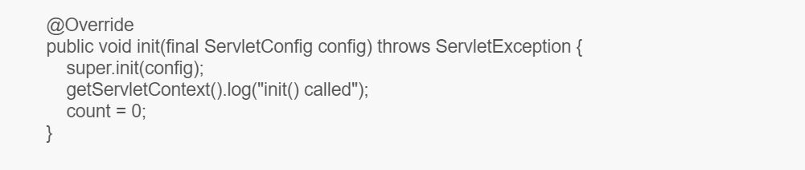

Servlet Lifecycle
A servlet lifecycle can be defined as the entire process from its creation till the destruction. The following are the paths followed by a servlet.
The servlet is initialized by calling the init() method.
The servlet calls service() method to process a client's request.
The servlet is terminated by calling the destroy() method.
Finally, servlet is garbage collected by the garbage collector of the JVM.
1) INSTALLATION => constructor call - Created an instance of the servlet to service client request.
Invoked implicitly by the servlet container when the servlet is called upon to service a client request and no instance currently exist.
2) INITIALIZATION => service() method - invoked only once and is intended for any start up initialization code for the servlet.
Servlet performs whatever logic necessary in order to serve the request and generate a response.
The service() method checks the HTTP request type (GET, POST, PUT, DELETE, etc.) and calls doGet, doPost, doPut, doDelete, etc. methods as appropriate.
Multiple client request are typically handled by a single, multi-threaded servlet instance.
3) Request Handling = service() method Invoked for each client request.
Servlet performs whatever logic necessary in order to serve the request and generate response
Multiple client requests are typically handled by a to ensure that the code being run by the servlet is "thread-safe".
4) Destruction => destroy() method Invoked before the servlet instance is ‘unloaded’.
The destroy() method is called only once at the end of the life cycle of a servlet.
Java Servlet Code Sample
Example 1:
Example 2:

Example 3:

Classes of javax.servlet
1. GenericServlet - Defines a generic, protocol-independent servlet.
2. ServletInputStream - Provides an input stream for reading binary data from a client request, including an efficient readLine method for reading data one line at a time.
3. ServletOutputStream - Provides an output stream for sending binary data to the client.
4. ServletRequestWrapper - Provides a convenient implementation of the ServletRequest interface that can be subclassed by developers wishing to adapt the request to a Servlet.
5. ServletResponseWrapper - Provides a convenient implementation of the ServletResponse interface that can be subclassed by developers wishing to adapt the response from a Servlet.
6. ServletRequestEvent - Events of this kind indicate lifecycle events for a ServletRequest.
7. ServletContextEvent - This is the event class for notifications about changes to the servlet context of a web application.
8. ServletRequestAttributeEvent - This is the event class for notifications of changes to the attributes of the servlet request in an application.
9. ServletContextAttributeEvent - This is the event class for notifications about changes to the attributes of the servlet context of a web application.
10. ServletException - Defines a general exception a servlet can throw when it encounters difficulty.
11. UnavailableException - Defines an exception that a servlet or filter throws to indicate that it is permanently or temporarily unavailable.
Classes of javax.servlet.http
1. HttpServlet - Provides an abstract class to be subclassed to create an HTTP servlet suitable for a Web site.
2. Cookie - Creates a cookie, a small amount of information sent by a servlet to a Web browser, saved by the browser, and later sent back to the server.
3. HttpServletRequestWrapper - Provides a convenient implementation of the HttpServletRequest interface that can be subclassed by developers wishing to adapt the request to a Servlet.
4. HttpServletResponseWrapper - Provides a convenient implementation of the HttpServletResponse interface that can be subclassed by developers wishing to adapt the response from a Servlet.
5. HttpSessionEvent - This is the class representing event notifications for changes to sessions within a web application.
6. HttpSessionBindingEvent - Events of this type are either sent to an object that implements HttpSessionBindingListener when it is bound or unbound from a session, or to a HttpSessionAttributeListener that has been configured in the deployment descriptor when any attribute is bound, unbound or replaced in a session.
Interfaces of javax.servlet.http
1. HttpServletRequest - Extends the ServletRequest interface to provide request information for HTTP servlets.
2. HttpServletResponse - Extends the ServletResponse interface to provide HTTP-specific functionality in sending a response.
3. HttpSession - Provides a way to identify a user across more than one page request or visit to a Web site and to store information about that user.
4. HttpSessionListener - Implementations of this interface are notified of changes to the list of active sessions in a web application.
5. HttpSessionAttributeListener - This listener interface can be implemented in order to get notifications of changes to the attribute lists of sessions within this web application.
6. HttpSessionBindingListener - Causes an object to be notified when it is bound to or unbound from a session.
7. HttpSessionActivationListener - Objects that are bound to a session may listen to container events notifying them that sessions will be passivated and that session will be activated.